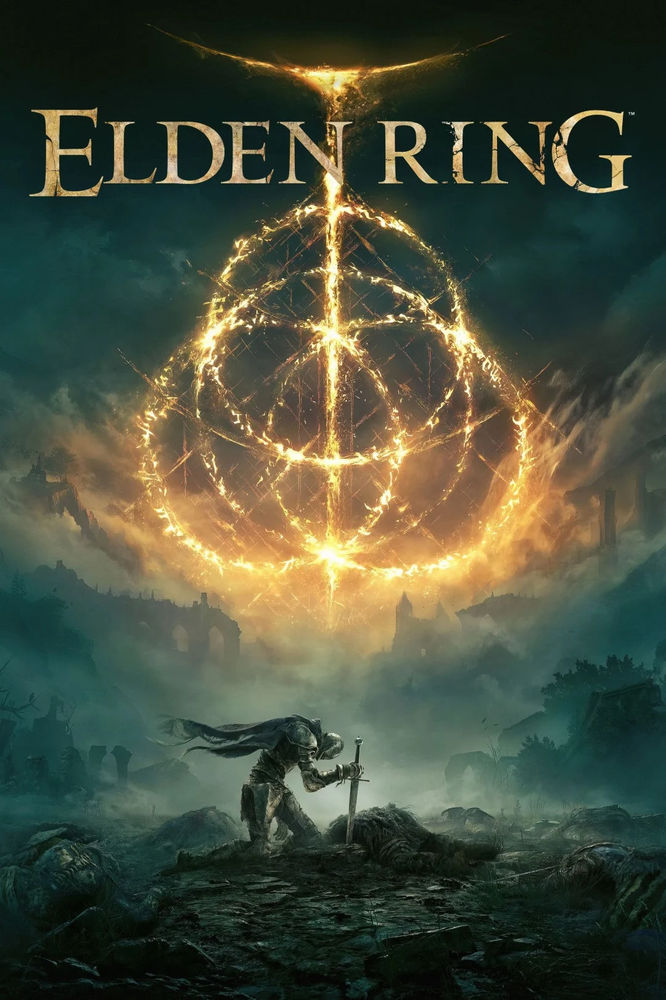

RPGs
RPGs or as they are better now as Role Playing Games are massive solo or multiplayer games, where the fun is playing out the life of the characters as if you are the character. RPGs while normally are open world and where the player is free to explore not all are. RPGs focus more on the character and the choices they make and how that influences the story and the world around them at large and is the reason the are so fun.
- Hogwarts Legacy
- Eldem Ring
Although, there are a lot of RPGs out there we here at LetsTalkGames have picked out two stand outs in the genre to review. We believe you guys the reader would love to know more about these two games as they are loved in the genre (even if for different reasons).
1. Hogwarts Legacy
Harry Potter is one of the best selling books world wide and easily recognizable and beloved by many. Thats part of the reason Hogwarts Legacy standout as it allows the player to create and costumize their very own witch or wizard and run around the halls of Hogwarts or soar across the grounds on a broom. Hogwarts Legacy has very stunning visuals which really brings alive the atmosphere when in Hogwarts or just flying around. We also have to give it up to the creaters of Hogwarts Legacy for really nailing the mechanics as anything from flying a broom to the combat hits in a way that will have you returing for more fun. Although, Hogwarts Legacy does have its low points and that would be its under whelming story. But that makes sense since it seems the creaters made the smart choice of focusing on the experience of being a student at Hogwarts and allowing the players to live out their dream of being a witch or wizard attending the school for the magically inclined and they nailed that part. All in all we here at LetsTalkGames would highly consider Hogwarts Legacy to anyone that is a Harry Potter fan or looking for a game that focuses more on the atmosphere of magic and mysticism.
For anyone looking to buy Hogwarts Legacy you can find it on the Xbox or Playstation games stores. For those of you on pc you can buy it here: Hogwarts Legacy
2. Elden Ring
FromSoftware has been around for quite sometime making renown titles such as the souls games. They are known for their games being extordinarly difficult to beat, but only a matter of committment and dedication one that if you put in leaves you with a sense of accomplishment you really can not get anywhere else. That is where their new game Elden ring comes in shaking up FromSoftwares usual formula from a linear progression to an open world game. They also went from souls to runes which are virtually the same thing as both are used to level up or as currency. Thats what makes the game so challenging because when you die you loose all your runes with only one chance to retrieve them if you fail to retrieve them before dying they are gone for good. The main difference between FromSoftwares souls games and Elden Ring is because Elden Ring is open world you can continue to level up where as in their souls games it was linear you could ony level up so much before reaching the next boss. This made Elden Ring more accessible as it lowered the skill cap. Elden Ring as breath taking visuals with mechanics that are so tuned in you may wonder is it the perfect game? well no, Elden Rings story is loosely told as you progress and largely hard to follow as it relies on you exploring and making the connections yourself. Also, while easier than past FromSoftware titles this is still a FromSoftware game and is not for the faint of heart as it can take over a hundred hours to beat the game relying on exploration and farming runes. All things said and done we here at LetsTalkGames recommend this game to anyone that is looking for a challenge and has a lot of time on their hands.
For anyone looking to buy Elden Ring you can find it on the Xbox or Playstation games stores. For those of you on pc you can buy it here: Elden Ring